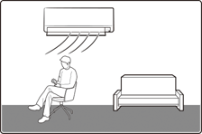
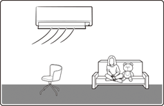
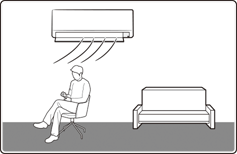

Smart Features
Smart Features
Power Smart Features
WindFree Cooling function
Use the WindFree Cooling function to enjoy a mild breeze coming through fine holes in the WindFree panel instead of air coming directly through the airflow blades.
In Cool/Dry/Fan mode | ▶ |
 NOTE
NOTE
- To cancel this function, press the (WindFree) button again.
- When the WindFree Cooling function is on, the air conditioner automatically controls the temperature and fan speed to keep your room mild and comfortable.
- When the WindFree Cooling function is canceled, the air conditioner returns to the original fan speed and air comes out of the airflow blades.
- In Cool mode, the recommended set temperature during the WindFree Cooling operation is 24 ℃ to 26 ℃.
- You can use the WindFree Cooling function in Cool, Dry, or Fan mode.
- You cannot select the Quiet function during the WindFree Cooling operation.
- Selecting the WindFree Cooling function cancels the MAX, Eco, and airflow direction adjustment functions.
AI Auto mode
Use AI Auto mode to automatically operate any of Cool, Dry, Heat, and WindFree Cooling modes depending on the learned user patterns gathered from an external server via Wi-Fi module. The favourite temperature and operation mode are also set based on the current temperatures (indoor/outdoor) and the gathered user patterns.
or | ||||
 | ▶ | ▶ | Select Auto. |
 NOTE
NOTE
- You can use this mode after Wi-Fi is connected.
- In AI Auto mode, the (AI Auto) and (Wi-Fi) indicators appears on the display of the indoor unit.
- If the gathered user patterns are not sufficient, the set temperature is set based on the user's activity time and indoor/outdoor temperatures.
- The set temperature is controlled within the range of 22 ℃ to 28 ℃ (Cool) / 20 ℃ to 28 ℃ (Heat) in AI Auto mode. You can also change it manually.
- An automatically changed set temperature is shown on the indoor unit display, which switches to the current temperature after 4 to 5 seconds.
- When you press (Mode) in AI Auto mode, the mode is cancelled.
- If you change the set temperature in AI Auto mode, the air conditioner operates with the changed set temperature.
 If not connected to Wi-Fi
If not connected to Wi-Fi
- The air conditioner automatically switches to Cool, Dry, or Heat mode, depending on the temperature and humidity of the room. Optimum mode, appropriate for the current air quality of the room, operates automatically to quickly provide pleasant air.
- Fan speed is automatically adjusted, depending on the temperature and humidity of the room.
Cool mode
Use Cool mode to stay cool in hot weather.
| ▶ | ▶ | Select Cool. |
 NOTE
NOTE
- For comfort, keep the temperature difference between the indoor and outdoor air within 5 ℃.
- After selecting Cool mode, select the desired function, temperature, and fan speed.
- To cool more quickly, select a lower temperature and a faster fan speed.
- To save energy, select a higher temperature and a slower fan speed.
- As the room temperature nears the set temperature, the compressor motor will slow down to save energy.
Dry mode
Use Dry mode in rainy or humid weather.
or | ||||
| ▶ | ▶ | Select Dry. |
 NOTE
NOTE
- The proper set temperature range for dehumidifying operation is 24 to 26 ℃. If you feel that the current humidity seems high, use a lower set temperature.
- You cannot use Dry mode for heating. Dry mode is designed to produce a cooling side-effect.
Fan mode
Use Fan mode to run the air conditioner like a floor fan, providing a breeze without heating or cooling.
| ▶ | ▶ | Select Fan. |
 NOTE
NOTE
- If the air conditioner will not be used for an extended period of time, run it in Fan mode for 3 to 4 hours to dry the internal components.
- The outdoor unit does not operate in Fan mode. This is normal and not a fault with the air conditioner.
Heat mode
Use Heat mode to stay warm.
| ▶ | ▶ | Select Heat. |
 NOTE
NOTE
- While the air conditioner warms up, the fan may not operate for about 3 to 5 minutes at the beginning to prevent cold blasts.
- If the air conditioner heats insufficiently, use an additional heating appliance in combination with the air conditioner.
Automatic defrost
When the outdoor temperature is low and the humidity is high, frost may develop on the outdoor heat exchanger, which may decrease heating efficiency. When these conditions are met while Heat mode is on, the air conditioner runs the Defrost function for 5 to 12 minutes to remove frost from the outdoor heat exchanger.
 NOTE
NOTE
- When the Defrost function is on, the (Defrost) indicator appears on the indoor unit display, steam is produced on the outdoor unit, the airflow blades do not move. (Note that on the multi system, the blades move to the lowest position. After defrost operation is complete, the blades return to the angle set by the user.)
- You cannot select other functions with the remote control until the Defrost function is finished.
Variety Smart Features
MAX function
Use the MAX function to quickly cool or heat your room. This function is the most powerful cooling and heating function provided by the air conditioner. You can select this function in Cool or Heat mode.
In Cool or Heat mode | ▶ |
 NOTE
NOTE
- You can change the airflow direction, but you cannot change the set temperature and the fan speed.
- When you select the MAX function in Heat mode, you may not be able to increase the fan speed for 3 to 5 minutes while the unit heats up.
- Selecting the MAX function cancels the WindFree Cooling, Eco, Good Sleep, and Quiet functions.
Eco function
For the multi system, this function is not supported.
Use the Eco function to reduce electricity consumption while staying cool or warm. You can select this function in Cool or Heat mode.
In Cool or Heat mode | ▶ |  | ▶ |  | ▶ |
Select Eco. | ▶ | |
 NOTE
NOTE
- When the Eco function starts, the vertical air swing begins.
- You can change the set temperature, airflow direction, and fan speed.
- The allowed set temperatures while the Eco function is on are:
Mode
Minumum set temperature
Maximum set temperature
Cool
24 ℃
30 ℃
Heat
16 ℃
30 ℃
- If you change the set temperature to be outside the allowed range for the current mode, the set temperature is automatically reset to be within the range.
- When you turn off the Eco function, the air swing continues. Use the airflow direction adjustment function to turn it off.
- Selecting the Eco function cancels the WindFree Cooling, Good Sleep, MAX, and Quiet functions.
Quiet function
Use the Quiet function to reduce the unit’s operating noise. You can select this function in Cool or Heat mode.
In Cool or Heat mode | ▶ | | ▶ | | ▶ |
Select Quiet. | ▶ | |
 NOTE
NOTE
- You can change the set temperature and the airflow direction, but you cannot change the fan speed.
- Selecting the Quiet function cancels the WindFree Cooling, Eco, Good Sleep, and MAX functions.
Motion detect function
Use the motion detect function to make the air conditioner detect human motions and blow air directly or indirectly. With no detect, energy-saving mode is operated.
In Cool or Heat mode | ▶ | | ▶ | | ▶ |
Select Motion detect. | ▶ | | ▶ | Select Direct or Indirect. | ▶ |
|
- When Direct wind is selected
- Wind is sent in the detected direction.
- When Indirect wind is selected
- Wind is sent in the opposite direction of detect.
- When human motions are detected everywhere
- In case of Direct wind, the air conditioner blows left and right swing airflow. In case of Indirect wind, centre airflow.
- In Heat mode, the vertical airflow blade moves up.
- When human motions are not detected
- When no human motions are detected for about 20 minutes, Energy-saving mode starts and the set temperature can change to up to 28 ℃.
- When human motions are detected in Energy-saving mode, the previous operation restarts.
 NOTE
NOTE
- The motion detect function operates only in Cool and Heat modes.
- The motion detect sensor can detect human motions within 5 m. It may not detect human motions outside the range.
- If any obstacle exists in front of the sensor or the site is subject to direct sunlight or wind, the sensor may not operate properly.
- The motion detect sensor can more easily detect the side to side motions of a person than the back and forth motions.
- The motion detect sensor is located at the bottom right of the product. Therefore, when a person is located around the center of the product, the sensor recognizes that the person is located at the left and the product blows air accordingly.
- Some areas around the center of the sensor may not be detected.
- The motions of a warm-blooded pet, swinging heater, or robot cleaner can be recognized as human motions.
- When a person stops movement within the detectable range, it may not be detected.
- Because the motion detect sensor can recognize movement of heats, it may not operate when a person turns backwards, exposes the skin less or is blocked by obstacles such as laundry.
- The sensor’s sensitivity may be lowered depending on the thickness of clothes.
- If you change the current mode, airflow direction, or optional function, the motion detect function is canceled.
- If a person takes body motions in the same place or there is no movement for a long time, it is recognized as an absence.
- If there are little motions such as in cases of infants and patients, or if little motions continue such as in cases of sleeping and movie watching, it can be recognized as an absence.
- Do not place a large object, heating appliance, or humidifier near the product.
- Do not touch the sensor. Failing to do so may result in product damage or malfunction.
Beep function
Use the Beep function to turn on or off the beep that sounds when you press a button on the remote control.
In Cool or Heat mode | ▶ | | ▶ | | ▶ |
Select Settings. | ▶ | | ▶ | | ▶ |
Select Beep. | ▶ | |
Auto clean function
Use the Auto clean function if the indoor unit produces odors.
Activating Auto clean
To activate Auto clean, press the (Options) button for at least 3 seconds.
The indoor unit display shows:
If the air conditioner is off, Auto clean starts immediately. If the air conditioner is running, Auto clean starts as soon as the air conditioner turns off.
 NOTE
NOTE
- You can also activate Auto clean from the Options menu:
▶
▶
Select Auto Clean.
▶
- Once Auto clean is selected, it is always activated whenever the air conditioner turns off.
- Auto clean runs for 10 to up to 30 minutes depending on internal dry conditions. The indoor unit display shows the cleaning progress from 1% to 99%.
- If you start another function while Auto clean is progressing, Auto clean pauses and will resume when the other function stops.
- When Auto clean completes, the air conditioner turns off.
- Auto clean does not run after Heat or Fan mode.
Canceling Auto clean
To cancel Auto clean while it is running, follow the procedure below:
| ▶ | Press and hold for 3 or more seconds. | |||
or | |||||
| ▶ | | ▶ | Select Auto Clean. | ▶ |
| |||||
 NOTE
NOTE
- Canceling Auto clean does not deactivate it.
Deactivating Auto clean
To cancel Auto clean while it is running, follow the procedure below:
| ▶ | Press and hold for 3 or more seconds. | |||
or | |||||
| ▶ | | ▶ | Select Auto Clean. | ▶ |
| |||||
Display lighting function
Use the Display lighting function to turn on or off the lighting of the indoor unit display.
In operation | ▶ | | ▶ | | ▶ |
Select Settings. | ▶ | | ▶ | | ▶ |
Select Lighting. | ▶ | |
 NOTE
NOTE
- If you change the current mode or function when the Display lighting function is on, the display lighting turns on for 5 seconds and then turns off again.
- To turn off the Display lighting function, run the method above again or turn the product off and on.
Wi-Fi function (SmartThings app)
Turn on the Wi-Fi function to pair your smartphone with the air conditioner.
▶ | Press and hold for 5 or more seconds. |
 NOTE
NOTE
- When you turn on the Wi-Fi function, your smartphone pairs with the air conditioner, AP appears on the remote control display for a few seconds.
- Once your smartphone is connected with the air conditioner, you can control it via the wireless Internet using the SmartThings app installed on your smartphone.
- For more information about how to prepare your smartphone for connection and how to control the air conditioner using the SmartThings app, see "SmartThings app" on page SmartThings app.
- To turn on or off the Wi-Fi, press and hold the and buttons for 5 seconds.
- In order to launch the SmartThings app, press and hold the button for 5 seconds, which enables to connect the air conditioner.
Time scheduling
Timed on/ Timed off function
Use the Timed on/off function to turn the air conditioner on or off after a duration. Scheduling durations before the air conditioner turns on or off helps use the air conditioner economically.
Turning on | | ▶ | | ▶ | Select Good Sleep/Timer. | ▶ | |
| ▶ | | ▶ | Select On Timer or Off Timer. | ▶ | ||
| ▶ | | ▶ | | ▶ | ||
(Set the duration.) | |||||||
Confirm that on the indoor unit display is turned on. | |||||||
Turning on | | ▶ | | ▶ | Select Good Sleep/Timer. | ▶ | |
| ▶ | | ▶ | Select On Timer or Off Timer. | ▶ | ||
| ▶ | | ▶ | | ▶ | ||
(Set the duration.) | |||||||
Confirm that on the indoor unit display is turned off. | |||||||
 NOTE
NOTE
- To cancel the Timed on/off function, set the duration to 00 m.
- If the remote control is off and you select Timer/Good Sleep, [On Timer] appears on the remote control display. If the remote control is on and you select Timer/Good Sleep, [Off Timer] appears.
- You can set the duration to from 30 minutes to 24 hours.
- You cannot set the same duration for both Timed on and Timed off functions.
Combining Timed on and Timed off
When the air conditioner is off
Example: Timed on 3 hours, Timed off 5 hours The air conditioner turns on 3 hours after the last time you press the
button to start the Timed on/off function, remains on for 2 hours, then turns off again.When the air conditioner is on
Example: Timed on 3 hours, Timed off 1 hour The air conditioner turns off 1 hour after the last time you press the
button to start the Timed on/off function, remains off for 2 hours, then turns on again.
If you set the Timed on function, you can change the mode or temperature while the remote control is off.
Basic selection
Additional selection
Good Sleep function
Use the Good Sleep function to save energy while you are sleeping. You can select this function in Cool or Heat mode.
Turning on | In Cool or Heat mode | ▶ | | ▶ | | ▶ | |
Select Good Sleep/Timer. | ▶ | | ▶ | | ▶ | ||
Select Good Sleep. | ▶ | | ▶ | | ▶ | ||
(Set the duration.) | |||||||
Confirm that on the indoor unit display is turned on. | |||||||
Turning on | In Cool or Heat mode | ▶ | | ▶ | | ▶ | |
Select Good Sleep/Timer. | ▶ | | ▶ | | ▶ | ||
Select Good Sleep. | ▶ | | ▶ | | ▶ | ||
(Set the duration.) | |||||||
Confirm that on the indoor unit display is turned off. | |||||||
 NOTE
NOTE
- To cancel the Good Sleep function, set the duration to 00 m.
- When you start the Good Sleep function, the (Timer) indicator appears on the indoor unit display.
- You can set the duration to from 30 minutes to 12 hours.
- The recommended set temperatures while the Good Sleep function is on are:
Mode
Recommended set temperature
Optimal set temperature
Cool
25 ℃ to 27 ℃
26 ℃
Heat
21 ℃ to 23 ℃
22 ℃
- The Good Sleep function can operate while the WindFree Cooling function is on.
- Selecting the Good Sleep function cancels Eco, MAX, and Quiet functions.